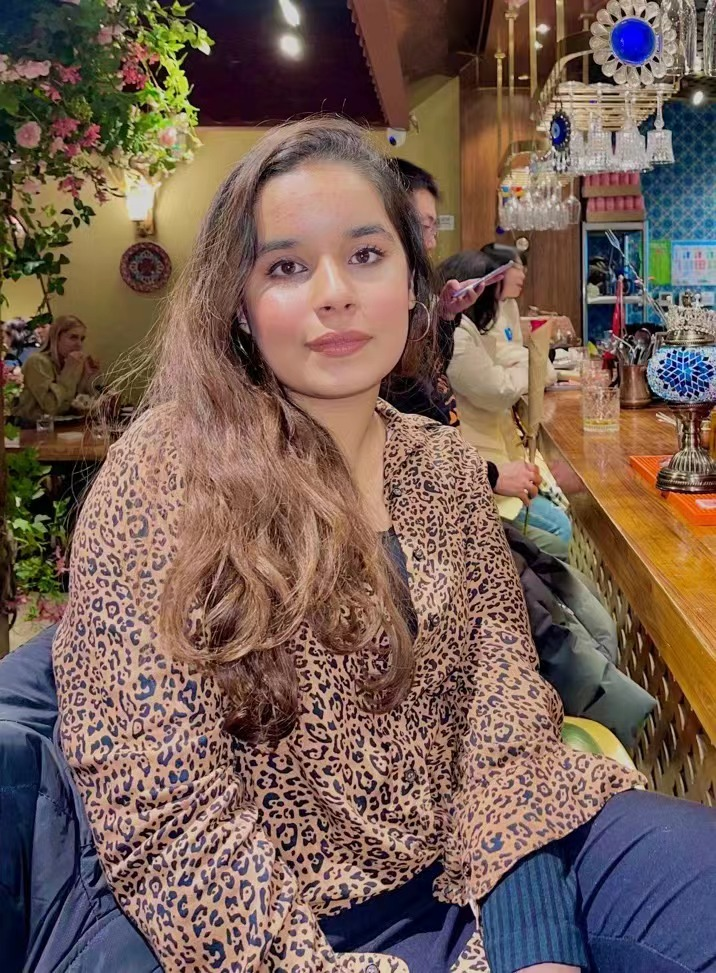

Hi, my name is Ari. I’m from Pakistan and I’ve been living in Beijing for the past 11 years. I’m a second year student of computer science at Beijing Institute of Technology.
Reading books is one of my favourite things to do in my free time and I absolutely adore it, so I was very ecstatic when The Return of Gaem team came up with the idea of making our website an interactive story for our web design project. To be able to read a book online and actually feel like you’re reading something tangible feels superficial, but our team members made it possible by figuring out a way to interact with the book/story you’re reading, that is, being able to flip the pages back and forth on demand, whenever you want. And so, you can have the full experience of reading a book on whatever gadget—laptop, phone etc that you’re using. I hope that you’re intrigued by our idea and recognize the efforts that are put in.
